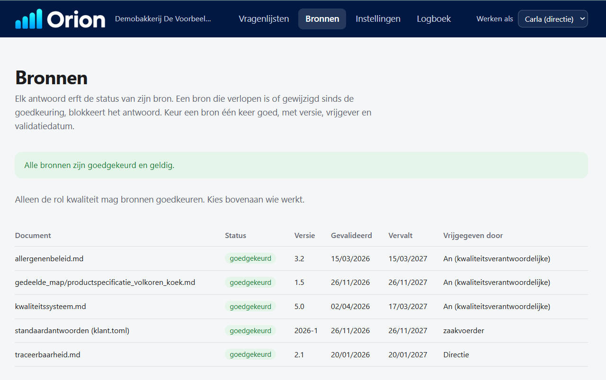

Welke bron is nog geldig?
Bij elk document ziet u de versie, de vervaldatum en wie het heeft vrijgegeven. In de demo blokkeert een verlopen of gewijzigde bron het bijbehorende antwoord tot de kwaliteitsverantwoordelijke de bron opnieuw valideert.

Vergroot het bronregister